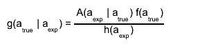
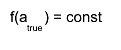
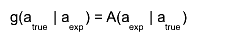
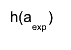
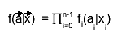
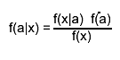
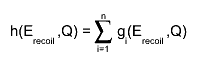
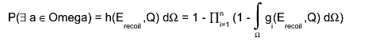
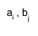
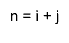

class KErecoilQDensity
KErecoilQDensity.cxx Author: Daniel Wegner <mailto:Daniel.Wegner@student.kit.edu> *Copyright 2011 Karlsruhe Inst. of Technology. All Rights Reserved. Created Friday 1. July 2011 A simple class that calculates the detector resolution function A, that for a given true event(Erecoil,Q) there is a certain measured value (Erecoil,Q) By applying Bayes' theorem  and assuming a flat prior  this function can be interpreted as the reverse pdf  that there is a certain true value of (ERecoil,Q) for a specifed experimental value (EIon, EHeat) (Bayesian probabilty) The posterior  is justed a fixed parameter then, which leads to normalization of g. This can be done for a single event as well as for multiple events Additionally marginal distributions with respect to E_recoil and Q are available The user can simply instantiate these functions by calling TF2 aFunction("aFunctionName", &KErecoilQDensity::<aMethod>, anNpx, Xmin, Xmax, anNpy, Ymin, Ymax NumberOfParameters); These static member functions are also used by the classes KQContourPoint and KQContourPointList
Function Members (Methods)
public:
Class Charts
| Inheritance Chart: | |||||
|
Function documentation
KErecoilQDensity(const KErecoilQDensity& )
Double_t SingleEventProbDensity(Double_t* x, Double_t* par)
This function represents the likelihood and detector resolution function g(E_recoil,Q) (documented in $KDATA_ROOT/doc/ERecoilQDistribution.pdf) for a single event The parameters are par[0] : mean ion energy par[1] : mean heat energy par[2] : sigma ion par[3] : sigma heat par[4] : sigma ion heat par[5] : voltage bias/ epsilon_gamma x[0]: recoil energy x[1]: Q value
Double_t SingleEventProbDensityWithIndicator(Double_t* x, Double_t* par)
This function represents the likelihood and detector resolution function g(E_recoil,Q) (documented in $KDATA_ROOT/doc/ERecoilQDistribution.pdf) for a single event The difference to the previous method is, that an indicator function ind(E_recoil,Q) can be given by the user. The indicator function is supposed to return 1 if (E_recoil,Q) is in a selected area, otherwise 0, and can be implemented by the user. Then the indicator is entered by casting a TF2* pointer to Double_t, which is then internally cast back to a TF2* pointer. Example: TF2 indicator("ind", "(y<100&&y>50) ? 1 : 0"); // x = recoil energy, y = Q value TF2 f("f", &SingleEventProbDensityWithIndicator, fEnergyRecoilMin, fEnergyRecoilMax, fQvalueMin, fQvalueMax, 7); f.SetParameter(0,(Double_t)&indicator); If the 0th parameter is set to 0, the indicator function is ignored (like always being 1) and the likelihood for given recoil energy and Q value is directly returned, otherwise the likelihood and the indicator function are evaluated and their product is returned This method is implemented for integrating the likelihood over arbitraryly shaped areas in (E_recoil,Q) The parameters are par[0] : pointer to the indicator function (TF2*) par[1] : mean ion energy par[2] : mean heat energy par[3] : sigma ion par[4] : sigma heat par[5] : sigma ion heat par[6] : voltage bias/ epsilon_gamma x[0]: recoil energy x[1]: Q value
Double_t MultiEventProbDensity(Double_t* x, Double_t* par)
This function represents the propability density for multiple events, which is the product of single event propabilities g_i(E_recoil,i,Q_i). (The events are assumed to be uncorrelated between each other) Again from a Bayesian point of view with flat prior (f(a) = const) it represents the propability densitiy  to have true events a_i in certain regions of the (ERecoil,Q)-planes (in total a (ERecoil,Q)^n-plane) for the corresponding events x_i. The function is 2n - dimensional, where n is the number of events The experimental values are par[0]: number of events n par[6*i+1]: mean ion energy of the i-th event par[6*i+2]: mean heat energy of the i-th event par[6*i+3]: sigma ion of the i-th event par[6*i+4]: sigma heat of the i-th event par[6*i+5]: sigma ion heat of the i-th event par[6*i+6]: voltage bias/ epsilon_gamma of the i-th event The elements of the true values a_i are x[2*i]: recoil energy of the i-th event x[2*i+1]: Q value of the i-th event
Double_t SingleEventTrueProbDensity(Double_t* x, Double_t* par)
This function represents f(a|x) Bayes Theorem is given by  So from a Bayesian point of view with flat prior (f(a) = const) this represents the propability density f(a|x) to have a true event in a certain region in the (ERecoil,Q)-plane for given experimental data for an event The peculiarity about this function is that the uncertainties sigma ion and sigma heat are dynamic since the uncertainties depend on the true value a The uncertainties are linearly interpolated between uncertainties on zero level and calibration level (by KQUncertainty::GetChannelUncertainty()) The parameters are par[0]: calibration energy par[1]: mean ion energy par[2]: sigma ion on zero level par[3]: sigma ion on calibration level par[4]: mean heat energy par[5]: sigma heat on zero level par[6]: sigma heat on calibration level par[7] voltage bis/ epsilon_gamma x[0]: recoil energy x[1]: Q value
Double_t SingleEventMarginalDensityErecoil(Double_t* x, Double_t* par)
This function represents the marginal distribution g(E_recoil) for a single event, which is the integral of g(E_recoil,Q) over Q from -infinity to infinity These experimental values are par[0] : mean ion energy par[1] : mean heat energy par[2] : sigma ion par[3] : sigma heat par[4] : sigma ion heat par[5] : voltage bias/ epsilon_gamma
Double_t SingleEventMomentErecoil(Double_t* x, Double_t* par)
This function represents the function (E_recoil-E_recoil,ref)^n*g(E_recoil) from which the central moments of E_recoil can be calculated These values are par[0] : mean ion energy par[1] : mean heat energy par[2] : sigma ion par[3] : sigma heat par[4] : sigma ion heat par[5] : voltage bias/ epsilon_gamma par[6] : index of moment n par[7] : reference point E_recoil,ref
Double_t MultiEventMarginalDensityErecoil(Double_t* x, Double_t* par)
This function represents the marginal distribution g(E_recoil) for multiple events, which is the product of single event marginal densities g_i(E_recoil,i) From a Bayesian point of view it represents the propability density to obtain certain true values of the recoil energy E_recoil,i for arbitrary Q values Q_i and the corresponding experimental data for an event These experimental values are par[0]: number of events par[6*i+1] : mean ion energy of the i-th event par[6*i+2] : mean heat energy of the i-th event par[6*i+3] : sigma ion of the i-th event par[6*i+4] : sigma heat of the i-th event par[6*i+5] : sigma ion heat of the i-th event.q par[6*i+6] : voltage bias/ epsilon_gamma
Double_t SingleEventMarginalDensityQ(Double_t* x, Double_t* par)
This function represents the marginal distribution g(Q) for a single event, which is the integral of g(E_recoil,Q) over E_recoil from -infinity to infinity. From a Bayesian point of view it represents the propability density to obtain a certain true value of the Q value for arbitrary E_recoil value and given experimental data for an event These experimental values are par[0] : mean ion energy par[1] : mean heat energy par[2] : sigma ion par[3] : sigma heat par[4] : sigma ion heat par[5] : voltage bias/ epsilon_gamma
Double_t SingleEventMomentQ(Double_t* x, Double_t* par)
This function represents the function (Q-Q_ref)^n*g(Q) from which the n-th central moment of Q can be calculated The values are par[0] : mean ion energy par[1] : mean heat energy par[2] : sigma ion par[3] : sigma heat par[4] : sigma ion heat par[5] : voltage bias/ epsilon_gamma par[6]: index of the moment n par[7]: reference point Q_ref
Double_t MultiEventMarginalDensityQ(Double_t* x, Double_t* par)
This function represents the marginal distribution g(Q) for multiple events, which is the product of single event marginal densities g_i( From a Bayesian point of view it represents the propability density to obtain a certain true value of the Q value for arbitrary Q value and given experimental data for an event These experimental values are par[0]: number of events n par[6*k+1] : mean ion energy of the k-th event par[6*k+2] : mean heat energy of the k-th event par[6*k+3] : sigma ion of the k-th event par[6*k+4] : sigma heat of the k-th event par[6*k+5] : sigma ion heat of the k-th event par[6*k+6] : voltage bias/ epsilon_gamma
Double_t MultiEventCummulativeProbDensity(Double_t* x, Double_t* par)
This function represents a cummulative distribution h(E_recoil,Q) for multiple events, which represents the propability that there exists at least one true event a in a certain small region dOmegaThus we obtain  This distribution is unconvenient to integrate over large regions
where the function values of the distributions g_i(E_recoil,Q) have strong variations. These experimental values are par[0]: number of events n par[6*k+1] : mean ion energy of the k-th event par[6*k+2] : mean heat energy of the k-th event par[6*k+3] : sigma ion of the k-th event par[6*k+4] : sigma heat of the k-th event par[6*k+5] : sigma ion heat of the k-th event par[6*k+6] : voltage bias/ epsilon_gamma
Double_t MultiEventProbabilityOfAtLeastOneEvent(Double_t* x, Double_t* par)
This function represents the propability that there exists at least one true event in an arbitrary area Omega of rectangular shape in the E_recoil-Q plane It is given by 
vector<Double_t> ConvoluteProbabilities(vector<Double_t> vectorA, vector<Double_t> vectorB)
This method is the merge routine of vector<Double_t> KErecoilQDensity::GetDistributionOfMultipleEvents( vector<Double_t> aVector) It calculates from two distributions of the number of occured events from two distinct sets of events represented by the input vectors the total distribution of all events in both sets. This is done by summing products of probabilities  that i events occur in the first set of events and j events occur in the second set of events Summing over all combinations with  then gives the probability, that n events occur in the union of both sets of events:The size of the second vector must be equal or larger than the size of the first vector for a safe call This restriction is kept by vector<Double_t> KErecoilQDensity::GetDistributionOfMultipleEvents( vector<Double_t> aVector) since rounding off in the bisection leads to a smaller first vector, otherwise both vectors are equal
vector<Double_t> GetDistributionOfMultipleEvents(vector<Double_t> aVector)
This method calculates the distribution of the number of occured events from a set of distinct events with different probabilities p_i given in the input vector "aVector". This is done by a divide and conquer approach similar to Merge sort. The input vector is bisected and this method called for both parts. The return values of this calls then represent the distributions for both subsets of events, which are merged by calling vector<Double_t> KErecoilQDensity::ConvoluteProbabilities(vector<Double_t> vectorA, vector<Double_t> vectorB) The returned vector is then the distribution of the total set of events. The recursive calls end when the vector size equals one, which means the input vector represents only one event. In this case a vector with (1-p , p), where p is the single entry in the input vector, is returned
Double_t* GetDistributionOfMultipleEvents(UInt_t aSize, Double_t* aVector)
KErecoilQDensity(const KErecoilQDensity& )